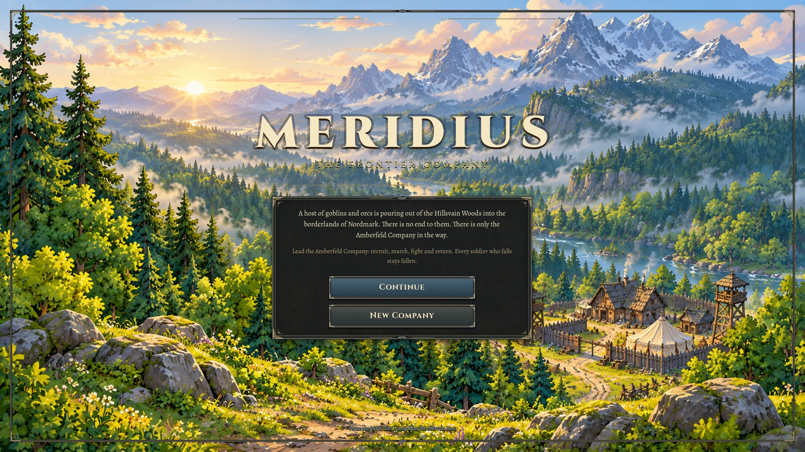
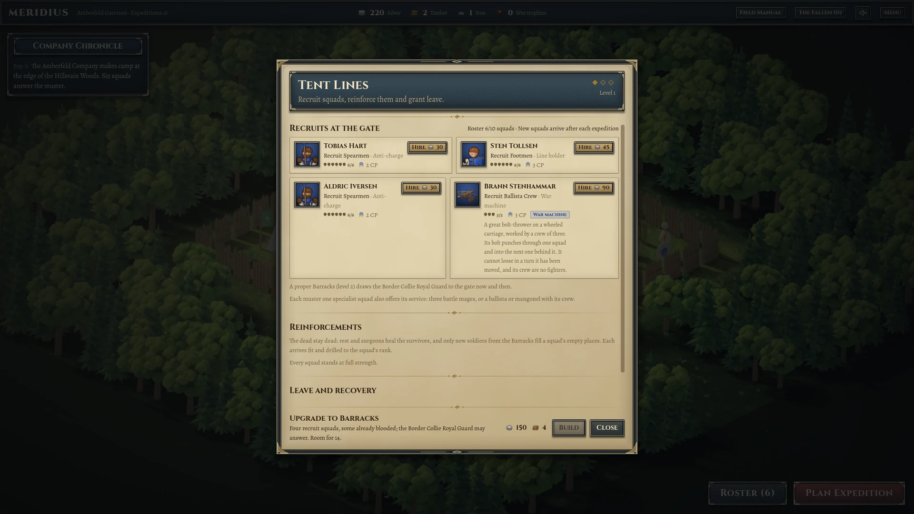
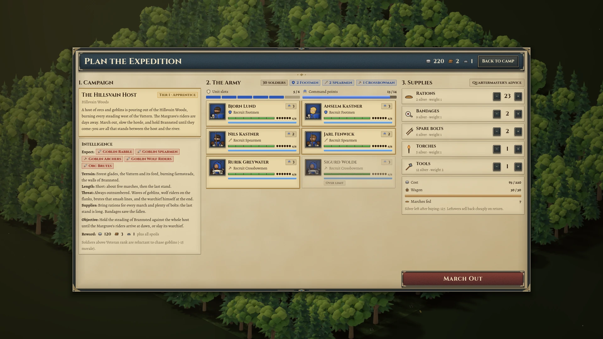
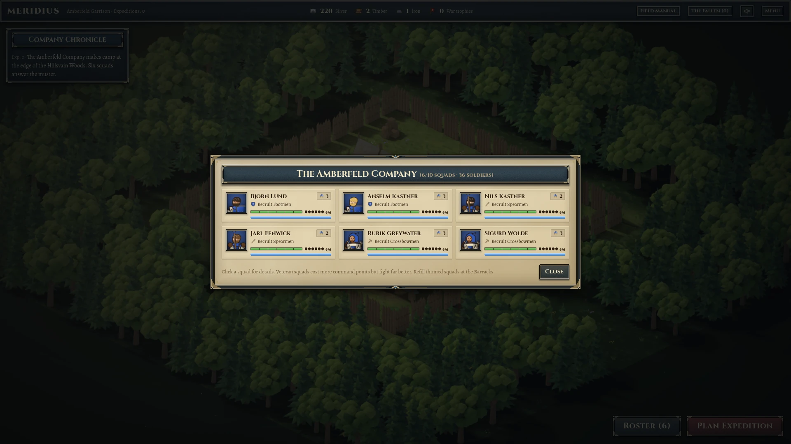
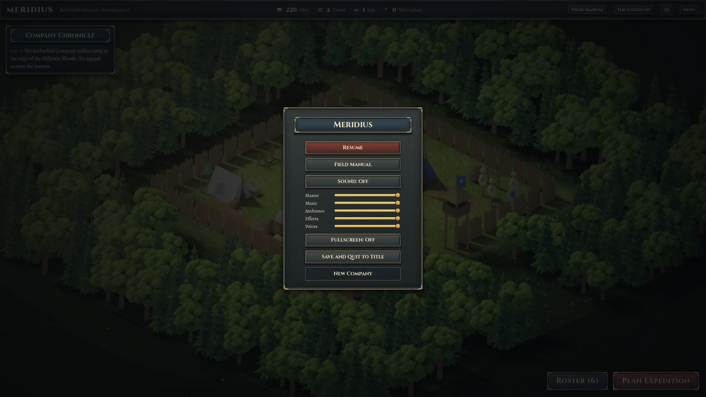
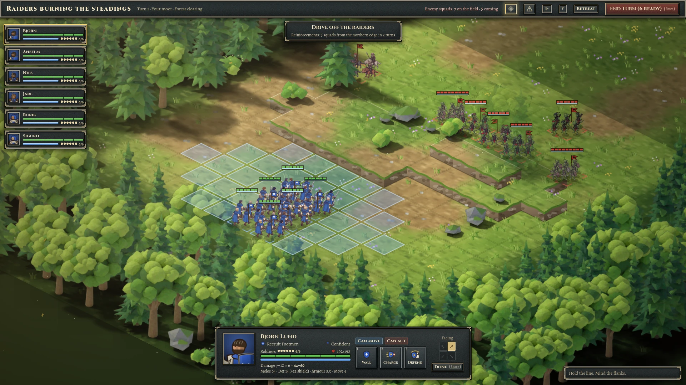
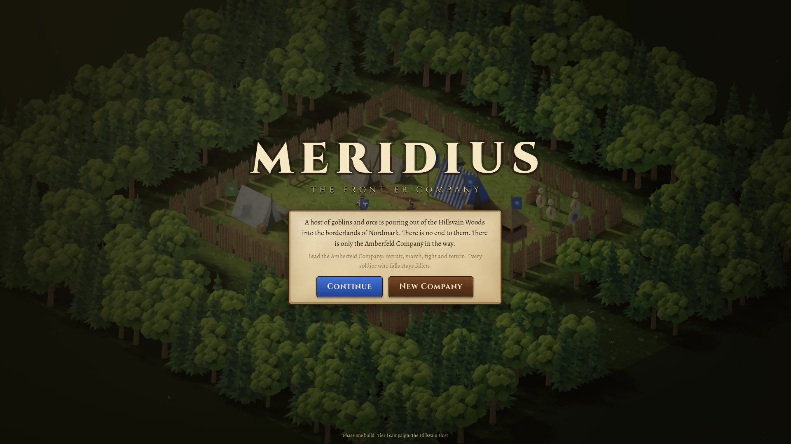
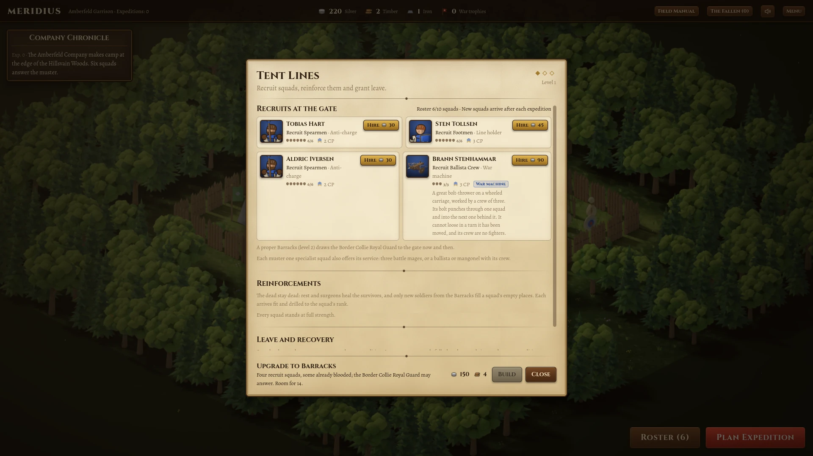
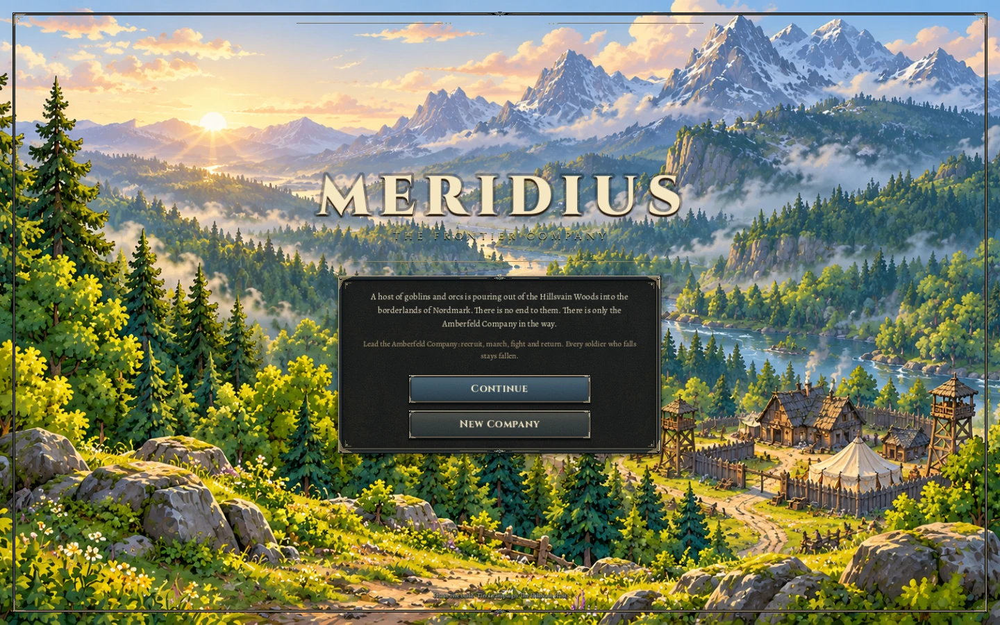
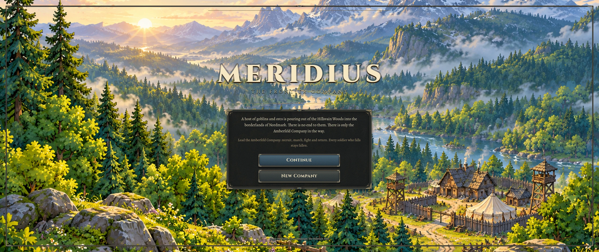

MERIDIUS / NORDMARK / 23 OCTOBER 2026
A brighter frontier. A forged interface.
A forest sunrise welcomes the company. Iron, worn brass, blue heading bands and warm vellum now connect the title, camp menus, expedition planning and battle controls.
No heraldic symbol has been added. The sunrise uses the supplied battlefield scenery as its primary style reference; the interface takes inspiration from the substantial frames of Warcraft III and the tactile materials of Diablo II.

One material language throughout
Camp buildings

Expedition preparation

Company roster

Pause and settings


Before and after
Previous title

Previous recruitment panel

Desktop proportions


Verification and sources
- 364 tests passed, 0 failed. The final quick suite completed in 201.6 seconds and skipped 10 long campaign and battle tests.
- 31 native captures, 0 rendering/runtime errors. Twenty-three scenarios at 1920 × 1080, plus title, roster, preparation and live battle at two other desktop resolutions. Capture log.
- 184 input checks passed, 0 failures, errors or warnings. Recruitment, settings and fullscreen, army and supplies, campaign navigation, deployment, movement, attacks, abilities, undo, end turn, retreat, report, minimap and return to title. Playthrough log.
- Report checked in light and dark at 1440 and 1024 pixels wide: images load, links resolve, and enlargement, 100% zoom, original image, download and close controls work. Report checks.
Art direction and editable source map · Source checksums · Original sunrise artwork · Title capture · Battle capture


All interface images on this page are native Godot framebuffer captures, not mockups. The backdrop is generated artwork; the frames and controls are reusable engine code. Reviewed against the existing working tree at commit 8adca51 on godot-migration. Agent visual review does not imply final aesthetic acceptance by the user. No Windows export was produced in this pass.